GymBuddy
Product Design & Full-Stack Development | UC San Diego |
January 2020 to March 2020
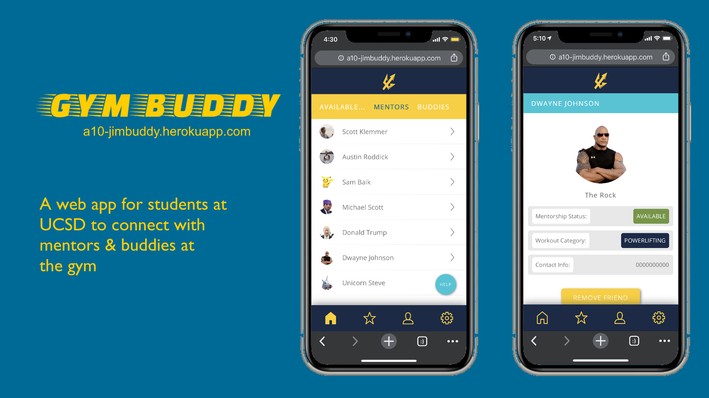
Background
If you’ve ever been to UC San Diego, you’ll know how much we Tritons love going to the gym on campus. However, when I first went to the gym during my freshman year I was completely out of my comfort zone and didn’t know where to even begin. I knew I wanted to lift weights, but I didn’t know how. My first time on a bench press, I put too much weight on the barbell for me to handle and I was trapped under the weight. I felt embarrassed and totally lost. New to the school and the gym, I wished it was easier to find someone who could’ve mentored me.
Inspired by my freshman year experience, I worked with a team of three other students at UCSD to create GymBuddy, a web app that connects students with mentors and buddies at the gym. I was primarily responsible for the design of the user interface, front-end development of the app and user testing.
Problem Statement
In a gym setting there exist certain social stigmas that can discourage new patrons from asking their peers for help.
How might we improve the gym experience for new gym-goers so that they can easily and comfortably get the knowledge they need to workout?
Needfinding
To better understand and empathize with students at the UCSD gym, we conducted needfinding and observed breakdowns that users had. We needed to distinguish what users wanted, wished and had trouble with at the gym. We started by directly observing students at the gym and paid attention when users made slips, mistakes or awkward interactions. We interviewed students afterwards and asked them open-ended questions about their experience, background in the gym, needs, and wishes.
User Needs We Identified:
Students at the gym need...
- to be able to ask others at the gym for help or for a spotter.
- the ability to overcome symptoms of gym anxiety such as feeling judged by others for their fitness level or intimidated by others at the gym.
- to be able to learn correct gym form, machine and equipment use, etiquette and effective workout plans.
- a way to stay motivated to keep going to the gym.
- a way to feel welcome and a part of a community.
Persona
Using the insights we gained from our user research so far, we created a persona to better understand our app's user base.
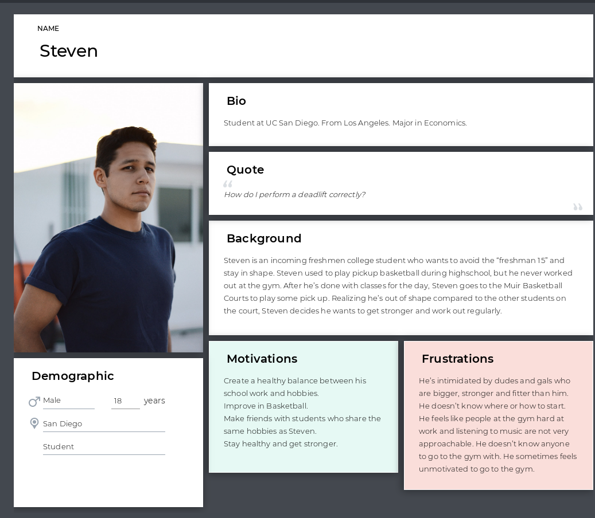Storyboards
In order to tackle our problem statement, we started to storyboard potential solutions. After directly observing and interviewing students at the gym, we used the breakdowns and user needs we identified from our research to capture the user experience of gym-goers in our storyboards. Below are two different approaches we thought of to address our problem statement.
Storyboard A:
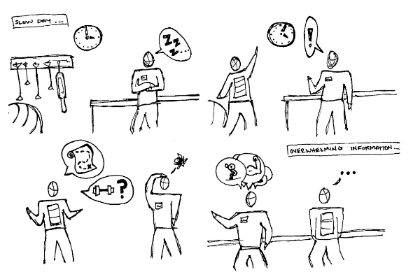 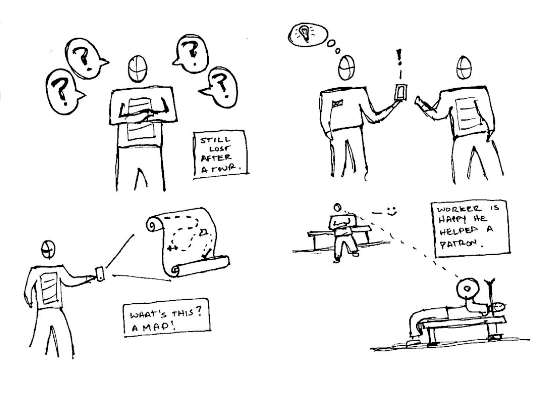Storyboard A focuses on users who are confused by the layout and equipment of the gym; where are specific pieces of equipment (machines, weights, etc.) located at and how a person would use them?. This solution provides users a map that they can access on their smartphone at their convenience. After finding a piece of equipment, the user is provided with more information on proper use/form, what muscle group it targets, etc. We liked this idea because we discovered that gym-goers were frequently lost and Googling information on proper equipment use/form. However, this solution does not fully address the problem statement since this storyboard does not help users deal with social stigmas at the gym that discourage them from asking for help.
Storyboard B:
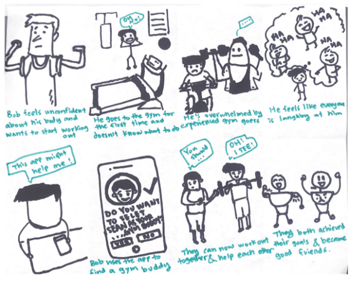Storyboard B focuses on users new to the gym who suffer from gym anxiety and thus are discouraged from working out again or from asking for help. This solution provides users a way to connect with other students at the gym who are willing to mentor them. We envisioned that users who received guidance, feedback, support, and companionship from a friendly mentor would feel properly supported. Therefore, we were excited about this potential solution because we would be able to address a major user need. Some concerns we had about this solution was the mismatch in skill between the two gym buddies that were paired and the potential shortage in supply of mentors but a surplus of demand.
Low-Fidelity Prototypes
After storyboarding different user experiences, the next step in the design process was to start prototyping. Rather than head straight into any prototyping or wireframing tools, our team built and tested paper prototypes of two different solutions to the problem statement.
Prototype A:
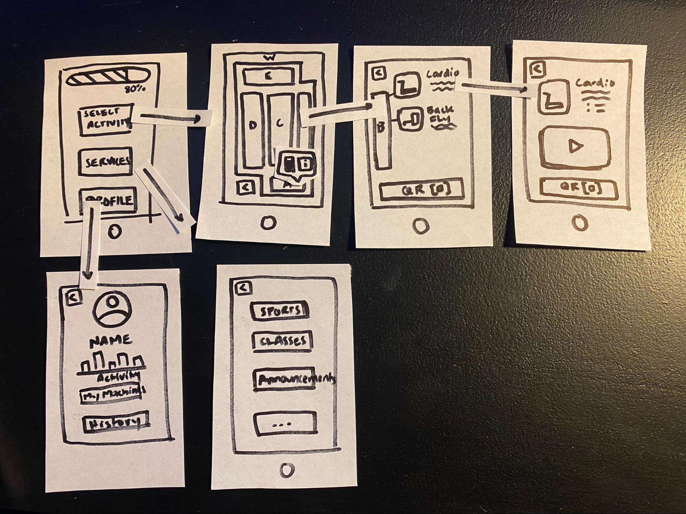Prototype B:
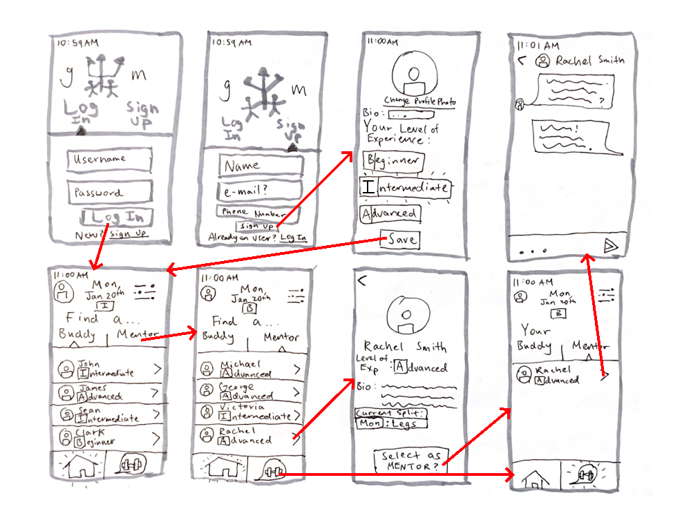After we created our paper prototypes, we conducted heuristic evaluations to gather qualitative feedback and severity ratings of usability problems. Based on our user tests and feedback, we identified five key changes we needed to make in the next iteration of our prototype.
- 1. Visibility of System Status: Implement some sort of indication to clearly show which tab you’re on.
- Paper prototype failed to obviously indicate if you were on the home page or chat page. Evaluator was confused as to which page of the app she was currently or still on.
- 2. Help and Documentation: Provide information (via tooltip for example) on what it means to be a buddy or a mentor.
- Evaluator didn’t know the responsibilities of a buddy or mentor. Users need help to understand what they’re getting themselves into before acting as a buddy or a mentor.
- 3. Recognition rather than recall: Add schedule functionality; a way for ‘buddies’ to see each other’s schedules and clearly plan times to go to the gym together.
- According to the evaluations we received, it would be intuitive to include this feature since users would have to remember when they were going to the gym and who they were going to the gym with.
- 4. User Control and Feedback: Implement navigation bar or home button
- User should be able to return home or at least access a menu in a single click from anywhere in the application. Evaluator was frustrated she had to press the ‘back’ button several times to go back to the home page.
- 5. Error Prevention: Add a confirmation button before a user selects a buddy or mentor.
- What happens if someone accidentally presses the select as buddy/mentor button? Evaluator made a slip and pressed the ‘select as mentor’ button instead of a nearby button she wanted to press.
Video Prototype
To further illustrate situations where Prototype B might be used, we created a video of a fictional user persona that was based on our research. The video helped us visualize the core interactions we envisioned users of our prototype would have. We pictured that our prototype would best help UCSD students who were new to the gym and needed mentorship.
High-Fidelity Prototypes
Before we began writing the code for our app, we decided to prototype some screens to better understand the overall layout and visual design we wanted. We used the research and testing we did and iterated upon our lo-fi prototype.
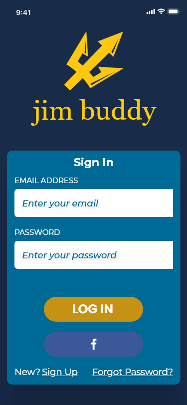 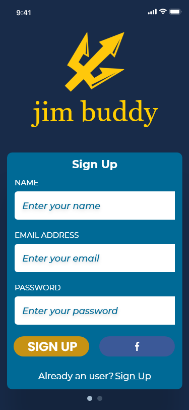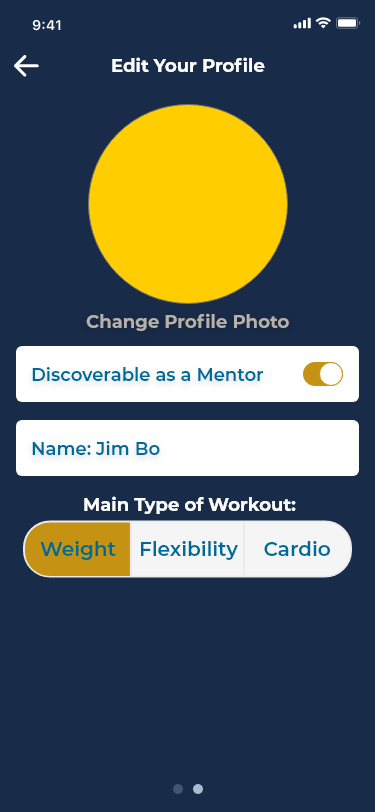 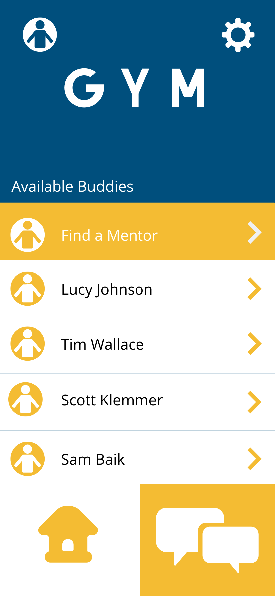
User Testing:
We instructed users to find both a gym mentor that matches their workout preference and a gym buddy. Then we will have them contact a previously added mentor or buddy.
Three design questions we aimed to investigate were:
- 1. How do users want to contact their matched buddies? How much intervention is required on the backend to facilitate this communication?
- We want to investigate this question to determine whether or not we should implement native messaging, or if we can simply give someone a buddy’s phone number. If users remark that they feel uncomfortable giving out their phone number, then we will know that we must implement messaging. This can be addressed in the debrief as well as in the main test.
- 2. Are users able to locate the “Find a Mentor” feature in a reasonable amount of time? Is the information architecture logical?
- As the “Find a Mentor” feature is one of our most important user flows, we need to know if it is adequately easy to find. User testing can show us how long it takes users to find this feature. We will time users throughout the test, and take time stamps at critical points such as when they first access the mentor feature.
- 3. Can users figure out how to navigate the app without help?
- We need to know if users can even perform the simplest of navigational actions. Observing the number of navigation-related slips and mistakes can help us to change around menu options.
User Testing Insights:
- Users had difficulty locating key items in our app. One important change we will look into is directing users to a different page when they initially open the app. This would reduce overall confusion.
- Users experienced problems locating relevant mentors, both when initially attempting to pair with a mentor and also when attempting to locate an already added mentor. Restructuring the mentor adding button is something we will investigate through A/B testing next week, as it is a drastic change to our information architecture.
- Users were confused by the layout of the onboarding pages. To solve this problem, we can add a new page with more customization options and make the second two onboarding problems more distinct from the login page.
A/B Testing:
The ‘get mentor’ button on the main page was a component of our app that we wanted to potentially redesign. We were unsure whether a separate button that randomly pairs you with a mentor was a good design. Therefore, we decided to run an A/B test using Google Analytics and Optimize. We reached out to friends and roommates but made sure to contact people meeting one of three criteria: people who use the gym regularly, people who always say they’re going to use the gym but don’t end up going, and people who use the gym but only occasionally. Additionally, since a member of our team worked at RIMAC gym, we were able to source users from among RIMAC staff. This allowed us to get a unique top-down perspective on our app’s functionality.
Version A:
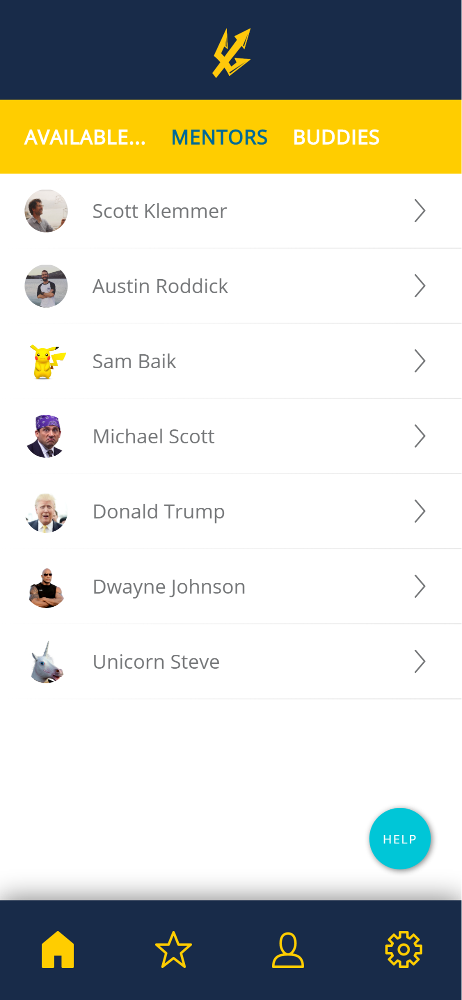 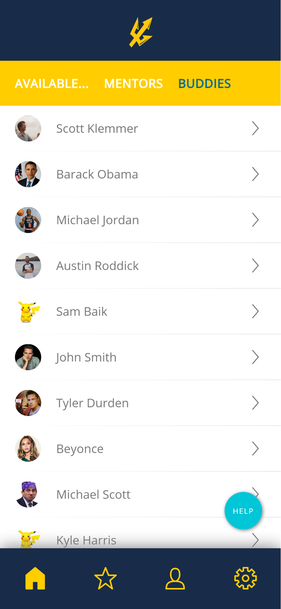Version A uses tabs at the top of the screen to navigate between available buddies and mentors. Users choose a buddy/mentor from the list themselves and send a friend request.
Version B:
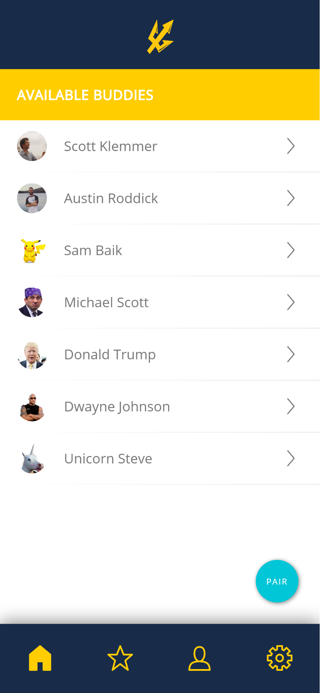 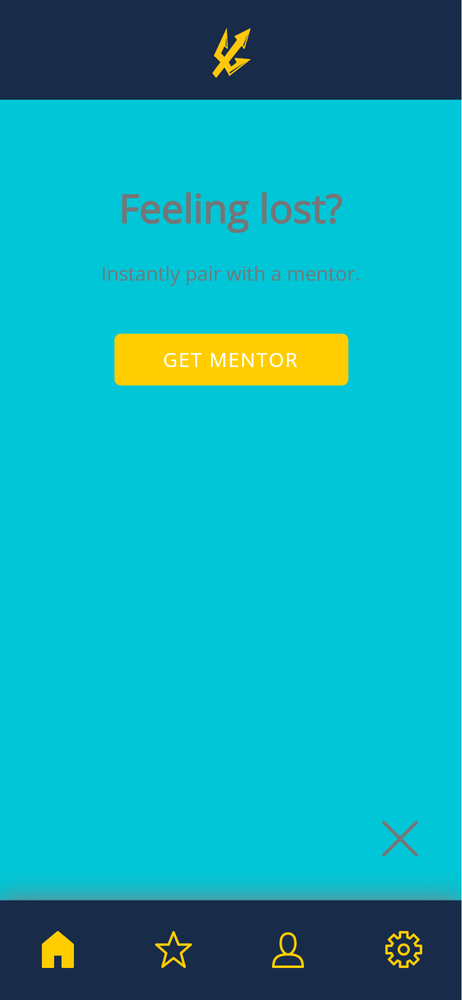Version B uses a single 'PAIR' button at the bottom right of the screen. Users click the button and are paired with a buddy/mentor by the app.
A/B Testing Insights:
From our results, we ultimately decided to use Version A because of...
- the number of page views and total time spent on site. When users used the original mentor button, they spent a shorter time on the site overall, meaning that they accomplished the site’s core function more quickly. Additionally, the astonishingly large number of page views on our main page lead us to infer that more of our features can be condensed such as to fit more information into a more concentrated form.
Final Product
Finally, after prototyping and user testing we created a working demo of our web app. You can try out the app here: GymBuddy
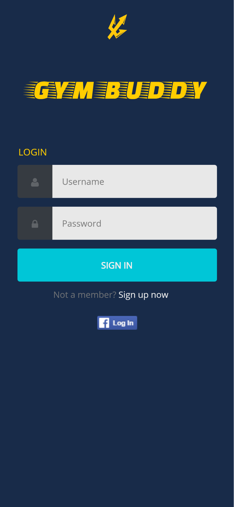 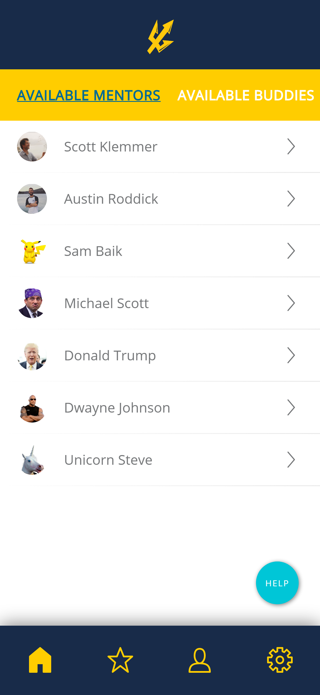
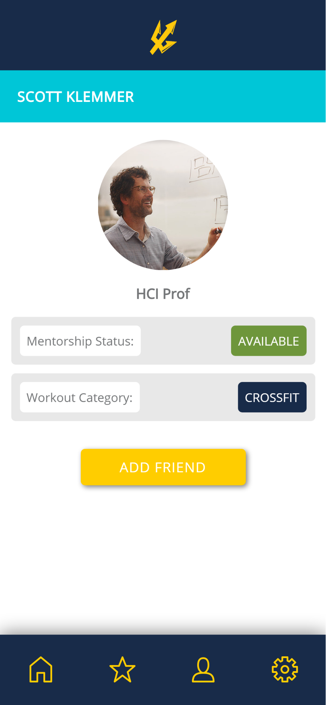 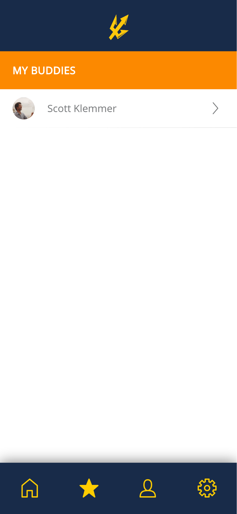
Watch a Walkthrough of the App
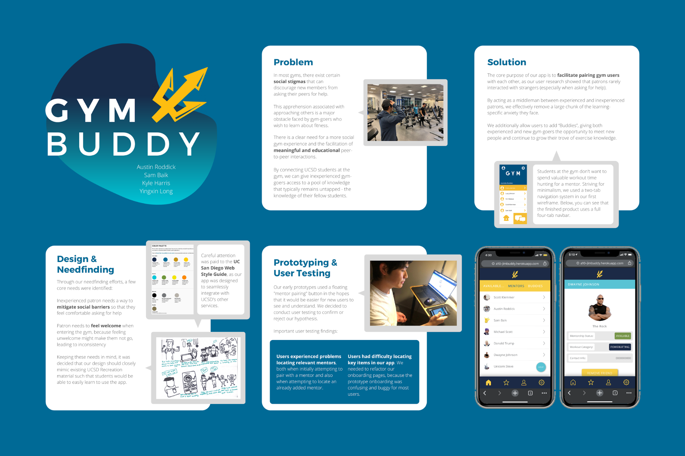
Reflections
Working on this project with my team was a great experience, and I learned a lot about project management, design and app development. Looking back at the goals we set at the start of the quarter, I think we were overambitious on what we wanted our web app to be given the time frame we were given to finish the project. While we did achieve most of the goals we set in a timely manner, we unfortunately had to scrap some goals along the way too. I hope to take these lessons and apply what I learned from this experience to team projects in the future.
Lastly, if I were to revisit this project with more time on my hands I would aim to further test the demo of our app, fix bugs in the code, redeploy the app, and grow the user base. With a larger user base, I would look to measure how often users looked for new buddies or mentors versus how often users stuck with buddies or mentors they had already paired with. This metric would further help us decide if our app should largely remain as a way to pair and connect people or pivot to another service.